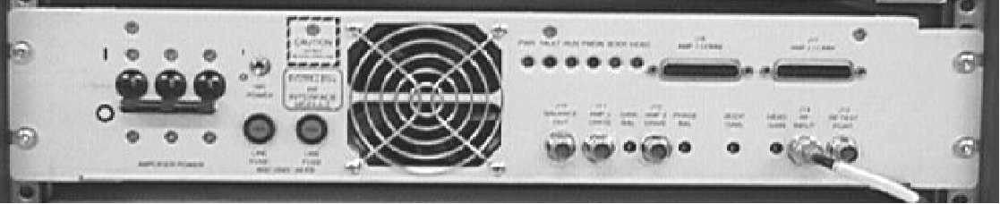
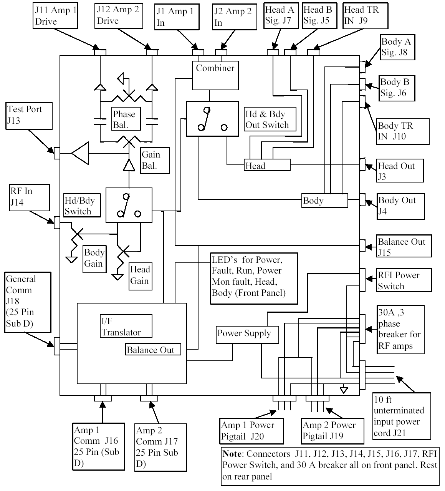

Operating Documentation
Direction 5133315-3, Rev# 14
Signa EXCITE HD 1.5T Service Methods
Module Version 1.0, Version Date 5/3/07
Operating Documentation |
See Illustration 1 below for a picture of the front of the RFI. The frequency of operation of the 1.5T RFI (GE Part # 2255388) is 63.86 MHz +/- 500 KHz. The frequency of operation of the 1.0T RFI (GE Part # 2194013) is 42.60 MHz +/- 500 KHz. The Radio Frequency Interface (RFI) has 3 main functions. The first is to provide a way to adjust the gain of the head and body RF power output. The second is to split the RF signal from the exciter and provide a separate RF drive signal for each amplifier so that the RF output from both will be equal in magnitude and phase. Phase and gain adjustments are provided on the RFI so as to get equal and in-phase RF power output from each RF amplifier and, as a result, maximum power output from the RFI Combiner. The RFI Combiner is located inside the RFI and combines (sums) the in-phase output of the 2 RF amplifiers to provide the proper RF output power (Gain) needed for Body or Head mode.
Illustration 1: FRONT VIEW OF RFI (FRONT IS IDENTICAL BETWEEN 1.0T AND 1.5T MODELS)

| NOTE: | In the RF/PDU and SRF Cabinets the RF signal from the exciter is connected via a rear interface bracket to BNC connector J14 on the front of the RFI Module. The Envelope Feedback circuitry inside the System Support Module (SSM) is not utilized. There is, therefore, no connection to J105 or J103 of the SSM. |
The third function is to act as a communications interface between the RF amplifiers and the SSM. Status and failure information from the amplifiers are received and interpreted in the RFI and then transferred to the System Support Module (SSM) and ultimately to the host computer.
The RFI consists of four modules; Input conditioning module, Output conditioning module, Interface Translator module and a commercially available power supply. Illustration 2 is a functional block diagram of the RFI showing the three functional blocks: IF Translation, Input Conditioning, and Output Conditioning.
Illustration 2: RFI FUNCTIONAL BLOCK DIAGRAM

This document is concerned with the 1.0T RFI (GE Part # 2194013) and the 1.5T RFI (GE Part # 2255388). While the front panels of the 1.0T RFI and 1.5T RFI look identical, the J1, J2 and J4 RF ports on the rear of the 1.0T RFI are N connectors while the same ports on the rear of the 1.5T RFI are HN connectors. For this and other reasons the 1.0T RFI and 1.5T RFI are, obviously, NOT interchangeable. The GE Part #’s listed on the manufacturers label, located in the upper left rear of the RFI, can also be used to differentiate between the 2 RFI types.